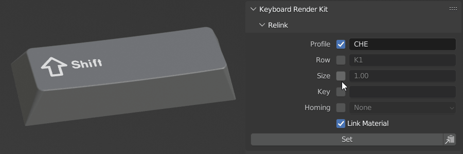
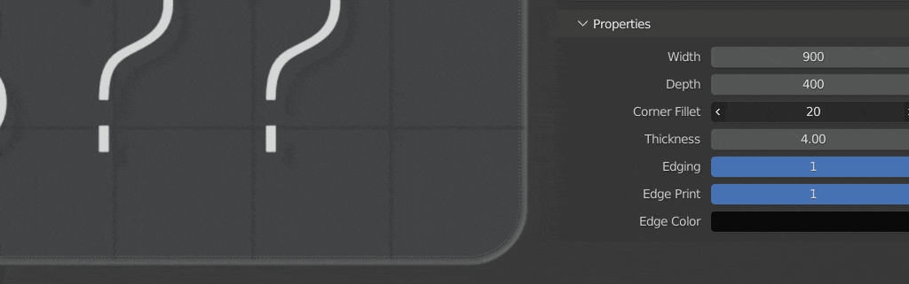

KRK 패널#

KRK 패널은 사이드바(N 키로 열기)에 있으며, Relink, Data, Color, Properties의 네 영역으로 구성됩니다. 마지막 두 영역은 해당 속성을 사용할 수 있을 때만 표시됩니다.
Relink(재링크)#
Relink는 오브젝트 데이터 관리자로, 키캡 프로파일, 행, 크기, 키 유형, 홈 키(homing)를 빠르게 전환하는 데 사용합니다. 체크박스로 선택한 옵션은 Set을 누르면 모두 적용됩니다.
KLE 가져오기#
KRK는 Keyboard Layout Editor의 JSON 파일을 가져올 수 있습니다. KLE는 오브젝트에 이름을 지정하지 않으므로, 가져오기 기능은 키캡 각인과 행(K1-K6)을 기준으로 키를 추론하고, 추론할 수 있는 위치에는 플레이스홀더를 배치합니다. 아래 KLE를 예시로 사용하거나, 이를 바탕으로 자신만의 키 배열을 만들 수 있습니다:
http://www.keyboard-layout-editor.com/#/gists/f7528ebe1348daab7abc45bc2f662c8a
Profile(높이)#

사용 가능한 높이와 그 접두사는 아웃라이너의 Profile 컬렉션에 있습니다. 행과 기타 옵션은 몇 번 사용해 보면 익숙해집니다. 옵션을 해당 입력 필드에 입력하고(대소문자 구분), 체크박스를 선택한 뒤 Set을 누르면 적용됩니다.
Row(행)#

제조사와 키캡 프로파일마다 행 번호 체계가 다르기 때문에, KRK는 키보드상의 실제 위치를 기준으로 가장 뒤쪽(사용자에게서 가장 먼) 행부터 세는 자체 번호 체계를 도입했습니다.
높이 |
옵션 |
행 |
옵션 |
|---|---|---|---|
KRK |
0 |
1-2-3-4-5-6 |
7 |
Cherry |
0 |
1-1-2-3-4-4 |
5 |
DCS |
5 |
1-1-2-3-4-4 |
|
DSA |
Uniform |
||
DSS |
1-1-2-3-4-3 |
4 |
|
KAM |
Uniform |
||
KAT |
5 |
4-4-3-2-1-1 |
|
OEM |
1-1-2-3-4-4 |
||
SA |
1-1-2-3-4-3 |
4 |
일부 높이는 첫 번째 행 및/또는 마지막 행을 서로 바꿀 수 있습니다.
(표의 Uniform은 모든 행이 같은 높이라는 뜻이며, 그대로 입력해야 합니다.)
Size(크기)#

입력 필드에 네 자리 크기 단위(unit size)를 입력하면 키캡 크기를 변경할 수 있습니다. 대상 지오메트리가 존재하는 한, 키캡은 원하는 크기로 변합니다.
Key(키)#

입력 필드에 키캡 이름을 입력하면 키캡을 다른 키캡으로 교체할 수 있습니다. 각인 교체형 키캡(Releg), 무각 키캡(Blank), 또는 윈도우 키캡(*_WIN)으로 바꿀 때 특히 편리합니다.
Homing(홈 키)#

이 드롭다운 메뉴에서 홈 키 유형을 바(bar)/넙(nub)/스쿱(scoop) 중에서 선택한 뒤 Set을 누릅니다.
Link Material(재질 링크)#
Link Material은 현재 적용된 재질을 대상 오브젝트 데이터로 가져옵니다. 켤지 끌지는 원하는 결과에 따라 결정합니다. 예를 들어 플레이스홀더 높이(PLA)로 바꿀 때는 Capsmat도 플레이스홀더로 딸려 가지 않도록 꺼야 합니다.
Copy Settings(설정 복사)#

Set 버튼 오른쪽에는 Copy Settings가 있으며, 오브젝트 데이터 이름을 오브젝트 데이터 드롭다운 메뉴로 복사하여 특정 키를 쉽게 찾을 수 있게 해줍니다.
다음 영역은 현재 활성(하이라이트) 오브젝트에 해당하는 옵션만 표시합니다.
Data(데이터)#
Data는 속성 패널의 오브젝트 데이터와 재질 할당을 가져와 더 편리하게 접근할 수 있게 해줍니다.
여기서 오브젝트 데이터를 빠르게 검색하여 현재 것을 다른 것으로 바꿀 수 있습니다. 예를 들어 키캡을 복사하거나 인스턴스화한 뒤, 복사본을 스위치나 스태빌라이저로 바꿀 수 있습니다.

키캡이 복사, 가져오기, 또는 붙여넣기로 인해 재링크할 수 없게 되었을 때, Restore Meshes를 사용하면 파일 내 같은 이름의 버전과 다시 연결할 수 있습니다. 가져온 것을 기준으로 삼고 싶다면, 그 오브젝트 데이터의 이름을 바꾸어 끝의 .001을 제거하십시오.

Restore Collections는 컬렉션 에셋을 선택했을 때만 나타나며, 이를 편집 가능한 상태로 복원하는 데 사용합니다.

여기의 Copy는 현재 활성 키캡의 재질을 다른 모든 선택된 키캡에 링크하며, 키캡이 아닌 오브젝트는 무시합니다.

Color(색상)#
Color는 색상 및 팔레트 관리 시스템으로, Capsmat의 색상 관련 속성을 제어하는 데 도움을 주며, 색상 속성을 사용할 수 있을 때만 표시됩니다. 선택한 키캡에 색상 속성이 없으면 Setup 버튼이 나타나며, 이 키캡에 필요한 모든 속성을 추가하는 데 사용합니다.

Custom/Palette 토글을 사용하면 사용자 정의 색상과 팔레트의 두 가지 워크플로 사이를 전환할 수 있습니다. 색상 A-E와 팔레트 슬라이더 A-E는 팔레트 노드 그룹을 통해 Capsmat의 해당 부분을 오브젝트별로 제어할 수 있게 해줍니다. 선택 후 Set을 누르면 모든 선택된 키캡에 적용되며, 각각의 복사 버튼을 눌러 한 번에 하나씩만 복사할 수도 있습니다. 하단의 Copy와 Paste는 모든 선택된 오브젝트에 대한 옵션 기록을 만들고 불러오는 데 사용합니다.

Properties(속성)#
Properties 역시 사용자 정의 속성을 사용할 수 있을 때만 표시됩니다. USB 케이블을 선택하면 브레이드/TechFlex와 커넥터 열수축 튜브의 색상 같은 케이블 옵션이 표시되고, 데스크매트를 선택하면 크기와 테두리(에징) 옵션이 표시됩니다.
